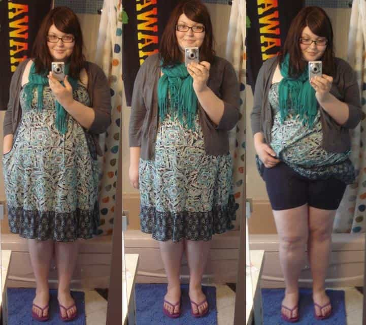

< < < Back
3 Types Of Women Who Refuse To Wear High Heels – Return Of Kings
Feminists have frequently touted that they shouldn’t be held to societal standards in things like fashion, hygiene, and even attitude. They’ve started campaigns for not grooming there hirsute bodies, neglecting to shave their legs and under pits. However, normal decent women saw through their sour grapes ploy. Feminists decided that if they couldn’t get women to stop grooming themselves, they would go to a new uncharted territory: They decided to make campaigns for women to stay obese and attack fashion. One of the main targets are high-heeled shoes.
Why is feminist America trying to make American women more like Lena Dunham than Audrey Hepburn? High-heeled shoes back in the day indicated a fashionable woman who tries to look as best she could. Now, they’re saved for sex workers. Even women visiting the President of the USA back in 2008 didn’t have the decency to dress in heels. They wore flip-flops.
This sign of female rebellion against looking good and being a proper female should be met with force. A force of not showing them any attention, or bestowing any chivalrous actions. A woman who won’t wear high heels should be boycotted and shown no love. Here are the three types of women I’ve observed who don’t wear high heels:
Feminists
The main group that would be propagating delusional hamsterisms about high-heels would be feminists. Every few months some irate feminist writes a blog post about how being presentable to the public is the patriarchy oppressing them. They would spew articles about things like makeup, shaving hairy body parts, or even being told to have a smile out in public, which grates the feminist. The reason most feminists out there despise high heels is because it relegates woman by themselves. Most women buy high heels that are designed and marketed by men. This fact shows the obvious life has a male bias, since it’s mostly men designing and producing these shoes.
The high heel is a shortcut for improvement to happen, and we all know that self-improvement is the enemy of the feminist. It makes the legs of even an average girl look tall and slender like a supermodel. It bumps up the curves more than any Instagram filter could ever achieve. Don’t show any women who can’t even put on a pair of heels a modicum of attention. They’re looking for attention for being a mentally ill contrarian. Shame them and then ignore them.
Lazy Women
Thankfully, most American women are not feminists. I know what you’re thinking. “They believe in a lot of feminist screeds.” That’s true, but most American women don’t buy it fully. A lot of them just use it as a justification for being lazy. The college girl who goes to class in her pajamas isn’t making a political statement. This laziness is why the overwhelming majority of women in America have stopped wearing high heels. It takes work to learn how to walk in heels, and tires one’s body when standing up for hours. That’s why flip flop use has grown rampant in these past 10 years even for formal events. I’m talking about galas, graduations, and even weddings.
A woman who isn’t willing to put in work to present herself in a decent manner is a terrible woman. You will hear these chicks talk about female empowerment by not wearing heels, but it doesn’t make any sense. I’ve personally witnessed many foreign highly-educated women who are willing to put in the work to look good. These women don’t have bullshit majors. Many are Slavic, Mediterranean, or Asian women with prestigious degrees. If these woman who put 40+ hours a week studying to be a pediatrician can put on a pair of heels when it matters, so can American sloths who spend the same amount of time on their iPhones.

Fat Women
The waistline of the average woman in western societies has ballooned. That has also increased their foot size and girth tremendously. Most high heels are designed for women who have the mental fortitude to make sure their feet aren’t as wide as an iPad. Fat woman literally cannot wear heels because of the laws of physics. The amount of weight they put on that tiny little heel could break a bridge. Fat woman are like the guys who are so fat that they have to use mobility scooters in super markets. They block the aisle and disgust the normal shoppers. Shame fat women for disfiguring the beautiful female form. High heels are the least of their concerns.
Notice the correlation among all of these types. It shows that women who don’t want to take care of themselves need to be shamed. Any time you see a woman in flip flops at a wedding, graduation, gala, or any formal event, make sure you call her out. Shame them in real life and through social media. Take pictures on Twitter of chicks wearing flip flops to a formal event and make up hashtags. If we want women to be truly feminine and pleasant creatures, we must show them the proper incentive to do so.
Read More: The History Of Flip Flops


{kind=link}
{kind=link}
{kind=link}